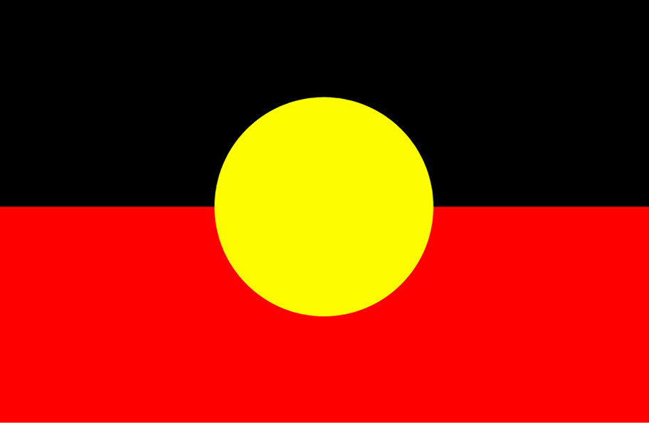

<!DOCTYPE html>
<html>

<head>
    <style>
        /* Style the footer */
        footer {
            background-color: #333;
            /* Background color for the footer */
            color: #fff;
            /* Text color */
            padding: 20px;
            /* Padding around the content */
            text-align: center;
            /* Center-align the text */
            border-bottom-left-radius: 0.35em;
            border-bottom-right-radius: 0.35em;
            border-top-right-radius: 0.35em;
            border-top-left-radius: 0.35em;
        }

        /* Style the flags */
        .flag {
            width: 50px;
            /* Adjust the width of the flags as needed */
            margin-right: 10px;
            /* Add some spacing between the flags and text */
        }

        /* Style the text within the footer */
        .acknowledgement p {
            font-family: Arial, Helvetica, sans-serif;
            font-size: 14px;
            /* Adjust the font size as needed */
        }
    </style>
</head>

<body>
    <footer>
        <div class="acknowledgement">
            
            
            <p>Moonfire Entertainment&reg; acknowledges the five traditional owners of the 
                Wimmera Southern Mallee Region; the
                  Wotjobaluk, Jaadwa, Jadawadjali, Wergaia and Jupagulk people. We pay our respects to the elders, both
                    past and present, and emerging.</p></div>
        